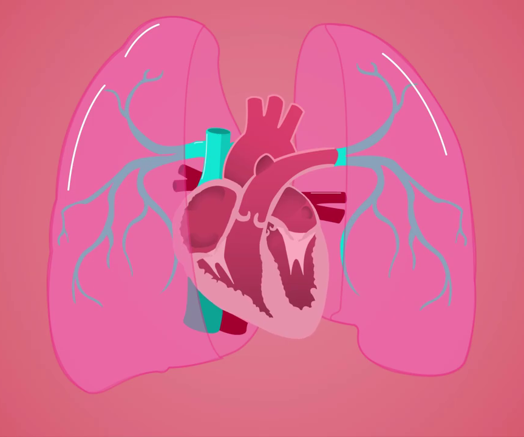
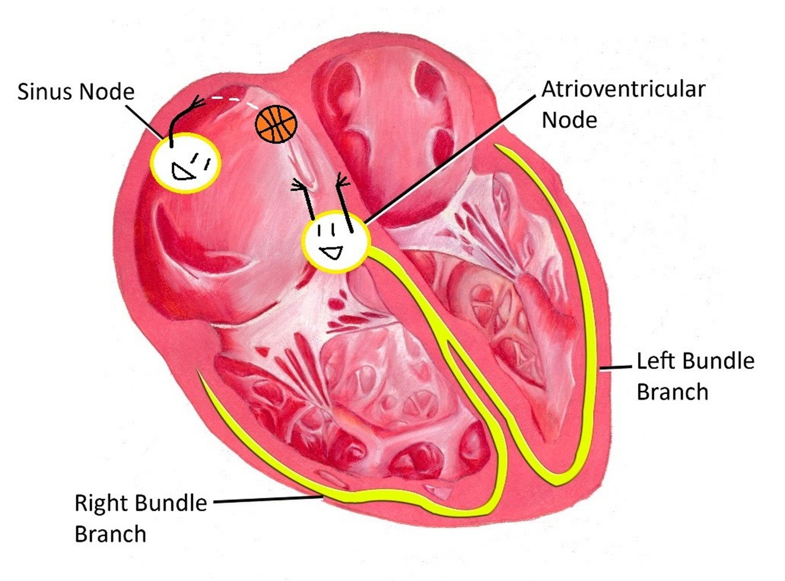

2 Makale
Kalp, kalp kası olarak bilinen özel bir tip çizgili kastan oluşmuş, içi boş, kendiliğinden kasılma özelliğine sahip bir organdır.

Kalbin Bölümleri
4 kart / 4 dak.
Kalp diyaframın üstünde, 2 akciğer arasında ve sola konumlanmış, göğüs boşluğunda olan bir organdır.
BAŞLA

Kalbin Tabakaları
1 kart / 1 dak.
Kalp Perikard, Miyokard ve Endokard olmak üzere üç tabakadan oluşur.
BAŞLA

Kalp Döngüsü
1 kart / 1 dak.
Bir kalp atımının başlangıcından, bir sonraki kalp atımının başlangıcına kadar olan olaylara kalp döngüsü ( kardiyak siklus) denir.
BAŞLA

Kalbi Etkileyen Faktörler
5 kart / 5 dak.
Kalbin çalışmasını etkileyen faktörler.
BAŞLA